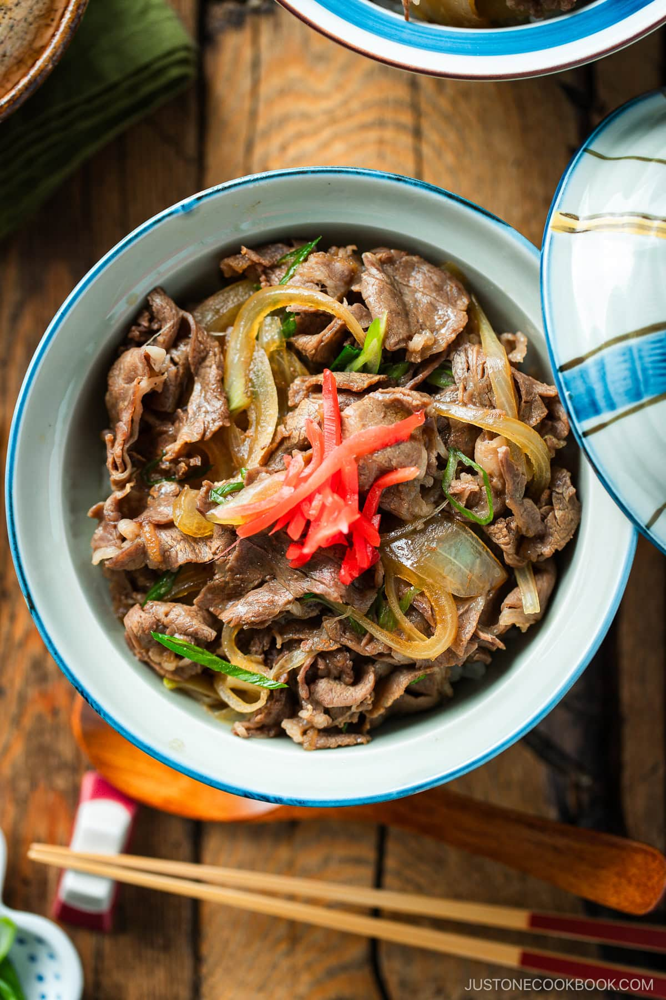

Home
Gyudon

Description
Gyudon is one of the classic comfort foods in Japanese cuisine that’s also become popular overseas (think Yoshinoya).
It’s a quick, hearty Japanese beef rice bowl that’s extremely simple to put together—a nutritious and budget-friendly meal that’s always satisfying.
Ingredients
- Thinly sliced beef (chuck or ribeye)
- Onion
- Green onion/scallion
- Cooked Japanese short-grain rice
- Pickled red ginger (beni shoga) - for garnish
- Sauce
- Dashi (Japanese soup stock)
- Sake
- Mirin
- Soy sauce
- Sugar - to taste
Steps to Making the Dish
- Preperation
- Cut the onions and beef. Thinly slice the onion and green onion/scallion. Then, remove the thinly sliced beef from the freezer when it’s semi-frozen and slice the meat into pieces 3 inches (7.6 cm) wide.
- Add the seasonings to the cold pan. To a large frying pan (do not turn on the heat yet), add the dashi, sake, mirin, soy sauce, and sugar. Stir to combine.
- Layer the onions and meat in the pan. Scatter the onion slices into the sauce around the pan, separating the layers. Next, place the meat on top, separating the thin slices of beef so the meat covers the onions.
- Cooking
- Cover the pan with a lid and turn on the heat. Start cooking over medium heat. Once simmering, turn down the heat and cook, covered, for 3–4 minutes. Once in a while, open the lid and skim off the scum and fat from the broth with a fine-mesh skimmer.
- Assemble
- Ladle over a bowl of hot steamed rice. Sprinkle the green onions on top and cook covered for another minute. Serve the steamed rice in large donburi bowls and spoon the beef and onions on top.
- Enjoy! Top with red pickled ginger and serve immediately.